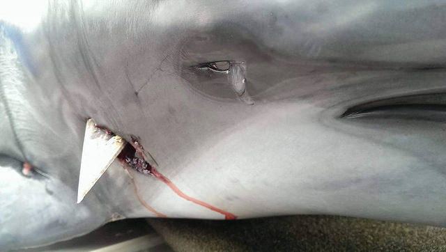

從昨天到今天，不論是新聞媒體或粉絲頁上，都可以看見各方對於「飛旋海豚被鏢刺事件」的高度關注和熱烈討論。也許是因為死亡海豚眼中的分泌液與鏢槍的照片太令人震撼動容，也或許是近日來接二連三的龍王鯛、綠蠵龜等海洋野生動物保育事件一再地挑起群眾敏感的神經，所以這則新聞被討論的程度幾乎登上了平面媒體的頭版。然而，對於這則新聞後續的延燒和討論，出現許多一面倒斥責漁民的聲浪——為了一個違反保育法規的非法漁獵行為，而將全台灣的漁民一竿子打翻，這是我們非常不樂見的。
事實上，既然這隻受苦的動物已經犧牲，那麼當然希望除了「海豚好可憐」之外的憐憫之外，我們能夠更有智慧看到這起事件背後的結構性問題，除了呼籲司法單位必須嚴正看待野生保育類動物捕殺地下化、徹底追查背後牽涉的黑市交易結構之外；相關的中央主管機關行政院農委會林務局、地方主管機關花蓮縣政府農業發展處保育與林政科，在保育工作的落實和態度上是否夠積極？專責的海洋事務處理機構「海洋保育署」走走停停究竟何時才要成立？此外，現行的漁業政策是否有照顧到漁民...等面向，都值得我們一一去檢視。
在台灣，往往當一個引發爭議的事件發生，群起的憤怒會啟動「獵巫模式」，如果找得到「兇手」就往死裡打；若找不到「兇手」成為懸案，就遷怒在相關的群體中去投射壓力，事件過後往往不了了之。多少人能夠認知：只從單一事件來處理而不討論背後結構性的問題，是非常輕鬆苟且的，也解決不了問題。其實大家都知道，這次的事件絕非單一事件，甚至可以說這只是冰山的一角，不論陸地或海域的野生保育類動物被人為誤殺或刻意獵捕的數量有多少？根本就一直是沒有人追查的懸案。然而，面對這樣的地下化案件要如何循線追緝、對於海上的現行犯如何加強執法？端看檢警單位的決心。
因此，讓執法單位、檢察單位感受到民眾對違法事件的關心，以及對第一線嚴格執法人員查緝工作上的支持，是重要的力量；例如澎湖南方四島國家公園的蕭再泉小隊長，就不斷透過臉書來讓執法過程透明化，也讓民眾持續的關心成為海上執法的強心針。所以，面對類似的事件，都需要大家持續的關注、監督與發聲；同時，地方保育機關也應該建立健全的保育處理機制，如：完整的民眾通報系統、公開的資訊管道、處理流程、公民參與模式、教育訓練及事件後的檢討機制等，以積極、透明的態度來面對保育工作的推動，加強民眾的參與度；當然，讓海洋保育團體念茲在茲、千呼萬喚出不來的「海洋保育署」，則是扮演統整一個海域各方事務的中央海洋事務專責機構，政府部門應當盡速推動成立，並加入民間參與機制。
除了動物的問題從保育法令、執法和判決層面去談之外，本文也想探討漁民在整起事件中的角色；因為所有動物的問題，都是起源於人的問題。
早期，在野保法成立之前，台灣各地都有捕鯨、吃海豚肉的習慣，姑且不論台灣在獵捕鯨豚的歷史，是否與日本殖民後有規模地建立「捕鯨業台灣基地」有關，但在當時的時空背景之下，海豚肉既不違法又取得容易，沒有人會去公然譴責漁民，對於漁民來說，捕鯨也是漁業的一部份，甚至是基於「清除害魚」的理由，自行運作一套「生態平衡」的邏輯：海裡的鯨越多，魚就會越少（？） 然而，在1980年代野保法正式將鯨豚列為保育類動物之後，漁民開始知道這些「海豬仔」抓了會被罰錢，所以也就從這時候開始，獵殺海豚成為一種地下化的交易——有需求，就會有供應；而這個供需市場，也許遠比檯面上的交易還要複雜與黑暗。
漁民為什麼明知違法，還要鋌而走險？據悉，海豚肉的交易價一公斤可達250元，不同品種的海豚肉價錢也不同。不論是因為施用流刺網時混獲鯨豚的「誤捕」，還是用傳統的鏢刺漁法目標精確地獵捕，每年因此而死亡的鯨豚不計其數，不論是漁業署或海巡機關亦不曾出示統計數據。究竟誰在捕海豚？在漁民之間也成了一個公開的默契和不能說的秘密，即便被查緝了法官多半也選擇輕判：畢竟，生活不易，面對越來越艱困的漁業環境，漁民們等不到實質的漁業補助和漁業政策，沒有船隻自營資本的漁民們，在產業結構下逐漸被壓迫和犧牲，加上沿近海漁業越來越貧瘠，出海成本越來越高、後繼無人的情況下，有些漁民甚至放棄了船隻，昔日海上的驕傲榮光不再，鎮日徘迴在港口邊聚賭飲酒，意志消沉。
在2010年，黑潮針對花蓮港討海人所做的口述歷史調查中，曾經親眼見證了漁民對於海洋生態枯竭、明知流刺網造成了生態危機自己卻無法不用，潸然落下的無力眼淚。